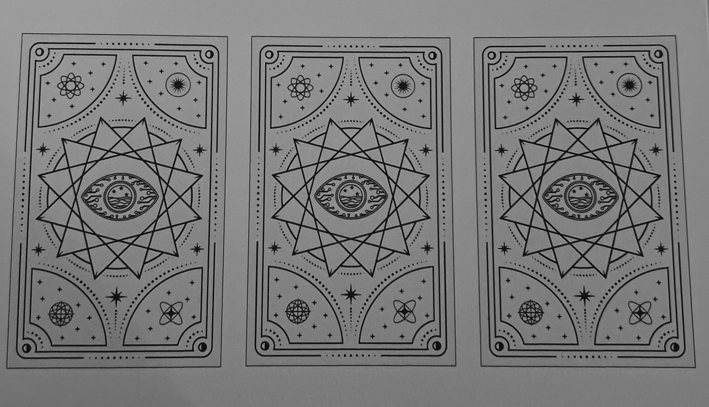
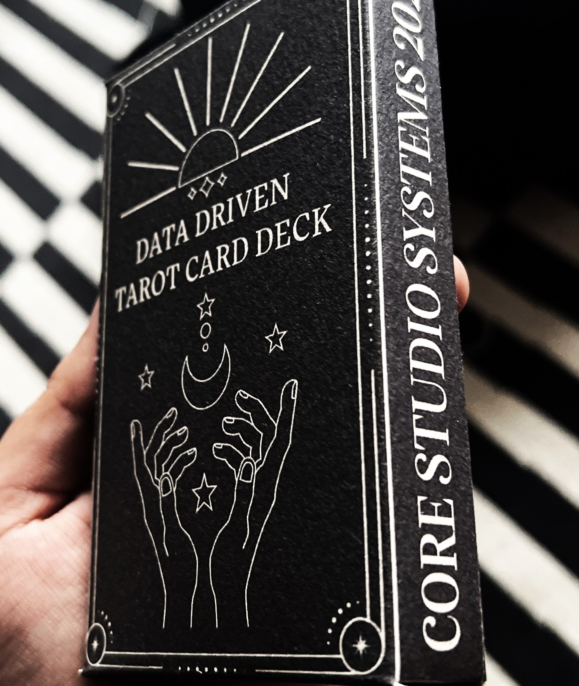
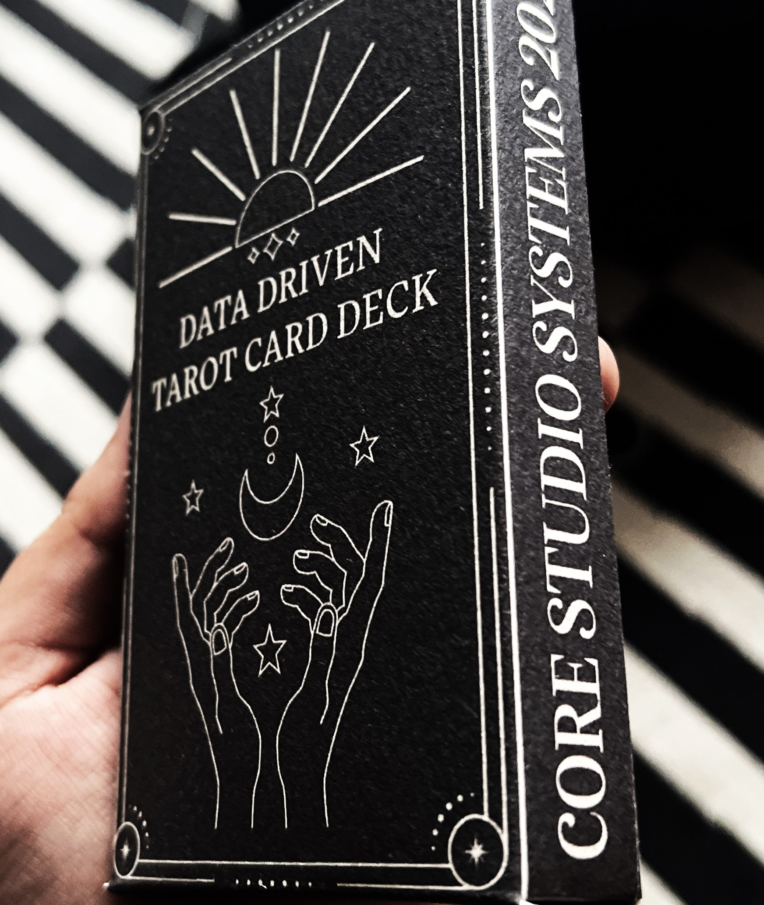

The Data-Driven Tarot began as an exploration of how modern digital identities, often fractured and scattered across platforms, can be visually and symbolically unified. The idea emerged from my growing awareness of how much personal data I generate in my everyday life and how it shapes, distorts, and reflects aspects of myself—much like tarot cards reveal aspects of identity, personality, and destiny. At the core of this project was the desire to bridge the mystical with the digital, blending the ancient symbolic world of tarot with the hyper-modern, data-driven age we live in. Tarot has long been a tool for self-reflection, introspection, and navigating the unknown. Similarly, the data collected about us online is another form of reflection, a mirror of our habits, choices, and subconscious behaviors. However, unlike tarot, data presents a somewhat distorted, fragmented, and algorithmically-driven version of ourselves. I wanted to see how these two systems—one symbolic and spiritual, the other technical and data-driven—could interact to provide a deeper understanding of the self.
Choosing tarot as the framework for this project wasn’t arbitrary—it speaks to the way I wanted to represent both the seen and unseen aspects of identity. Tarot, with its rich history of symbols, spreads, and interpretations, mirrors how data is often seen as a way to gain insight into who we are. But just as a tarot card reading depends on interpretation, so does the understanding of data. Tarot operates on layers of symbolism and metaphor, while data is typically seen as objective and factual. The overlap is in the interpretation: in both tarot and data, meaning is found in how the pieces come together to tell a story. I aimed to combine these two methods of introspection by creating cards that not only represent personal traits or moments but also highlight how data algorithms and AI systems attempt to define or predict our identities. The cards serve as a visual and conceptual bridge between the mysticism of tarot and the seemingly concrete nature of data.
Initial Research: My first step was to delve into the history, structure, and visual traditions of tarot cards. Tarot has long been used as a tool for introspection and self-discovery, so I researched different decks, paying close attention to the use of symbols, archetypes, and card spreads. I analyzed popular tarot decks like the Rider-Waite Tarot and more contemporary decks that experiment with symbolism. Understanding how upright and reversed meanings offer dual interpretations became an important aspect of how I planned to represent both the positive and shadow aspects of personal data. I would also like to take the time to mention my FAVOURITE DECK of all time, which I discovered around 4 years ago and has been living rent free in my mind ever since. While tarot became the symbolic framework, I also needed to understand the nature of personal data and how it is collected, processed, and interpreted. I focused on the types of data that companies track—music listening habits, social media engagement, purchase histories, and browsing behaviors. This led me to explore how algorithms create profiles based on this data. I reviewed information about first-party and second-party data—the data collected directly from users, such as listening habits, device preferences, and social media interactions. I wanted to see how platforms like Spotify, Google, and social media platforms categorize users into different audiences. This inspired me to look at my own data and analyze which patterns emerged, such as my music preferences or the platforms I use to communicate. For the visual design, I researched various artistic movements, eventually settling on Art Nouveau as the primary aesthetic for the cards. This style is known for its elegant, organic lines and complex, decorative patterns. I felt that Art Nouveau’s flowing, harmonious design language would contrast beautifully with the idea of cold, digital data, reflecting the tension between the natural and the artificial. As part of the ideation process, I explored how I could integrate QR codes into the design without disrupting the visual flow of the cards. My goal was to create a seamless connection between the physical card and the digital data it represents. This required research into how QR codes function in terms of scanability and how I could weave them into the artwork without sacrificing the intricate details of the design.
then moved on to ideate each card based on my personal data. I started by listing the different types of data I regularly produce and interact with—such as music playlists, social media use, and technology habits. I mapped this data to tarot-like archetypes, considering which data streams best represented certain aspects of myself. For each card, I considered its upright and reversed meanings, reflecting the positive and shadow sides of my data behaviors. For example, The Chameleon represents my adaptability across platforms, while its reversed meaning suggests the potential loss of identity by constantly shifting between different personas.
As the cards are meant to engage the audience beyond their physical form, I researched how viewers could interact with the tarot deck via QR codes. By scanning the codes, users could access deeper layers of interpretation and meaning creating an immersive experience where viewers are not just passive observers but active participants in uncovering the digital narrative behind each card.
One of the key challenges during ideation was balancing the symbolic and aesthetic elements with the functional aspects of data visualization. I needed the cards to be visually appealing, true to the tarot tradition, and also representative of real data patterns. I spent a significant amount of time thinking about how to make the QR codes an integral part of the design, rather than something that detracts from it. The solution was to weave the codes into the Art Nouveau aesthetic, ensuring they fit seamlessly into the visual language of the cards.
The prototyping and testing phase was essential in bringing the conceptual ideas of my Data-Driven Tarot into a tangible form. Since this project required a delicate balance between aesthetics, symbolism, and digital functionality, creating iterative prototypes allowed me to refine both the visual and interactive elements, ensuring that the cards resonated with the intended message while maintaining technical integrity. My first stage of prototyping involved transforming the QR codes into different patterns and designs using Stable Diffusion and a model called QR Code Monster that I set up to run on my desktop. I realise now that maybe I should have saved some of my initial tests to add as a part of my reflection. My main struggle was in this part of my project, trying to find the right balance between imagery and the QR code but I eventually decided to do a more Art Nouveau floral pattern for the codes instead to ensure that the cards would remain scannable while also not looking out of place. Once I was satisfied with the result of my QR codes and confident that Tarot Card deck would be functional, things started looking up and I set up a website on Github pages to allow me to create pages for each card. I then generated QR codes using the link and ran them through Stable Diffusion to achieve the pattern that I wanted. On Adobe Illustrator, I began to design the back of the cards, using traditional and mystical symbolism of Tarot merged with futuristic elements of data and technology. I settled on a minimalistic color palette to contrast the details of the intricate QR codes, so it wouldn't result in something too visually overwhelming. Some of the assets used were hand-drawn but most were from Adobe Stock Images due to time constraints.
Once the back of the cards were designed, I began to design each card, 12 in total, using the same mystical elements of tarot, also numbering them like a traditional deck. Once I was happy with the base template for each card, I imported their respective generated QR code patterns, converted them to a 2 color image and expanded them into editable layers from images so I could alter the colors to fit my color palette. Once I was satisfied with them, I lastly added each card's illustration to the respective cards. I then printed out the cards and their backs seperately on my printer at home, using 300gsm cardstock. As carefully as I could, I cut each card and it's back out, maybe getting a little imaptient in the process and resulting in a few wonky edges, and then glued the back and front of the cards. I tested all the cards to make sure they were scannable and didn't have any mistakes and while doing so, I had the idea to make a box for them as well. I am certifiably terrible at origami and had no idea how to make the box. I pulled up illustrator again, making sure to make the sides of the box slightly bigger and tried to unfold the shape of the box in my head, adding tabs to the sides that would need to be glued together. I decorated the box and also added a QR code to the back that would take users to the general website for the cards so they could read all of them, along with this reflection page as well. Surprisingly, the box was a success on the first try. Finally, I added text to each card's page and did some basic styling in CSS to ensure it was readable on the user's phone.
I'm actually really surprised how well my project went and how professional It looks. I was afraid of it looking like a DIY hackjob or an arts and crafts project but I think that my concept is strong and my design choices were perfect for this prototype and definitely look like a commerical project. The responses to it have also been positive, many finding it fascinating to be able to interact with the deck through QR codes while also mainting the physical process of shuffling and selecting a card.

 

For the future of this project, I would like to dive deeper into my own data and design more cards to have a larger deck. I also know that the website in its current state is extremely basic and needs more visual content to be more engaging. I also need to make sure the media on the website is responsive to different devices and screens as currently it is only ensured to be readable on a mobile device. For the far future, one of the most exciting possibilities for future development is the creation of user-specific tarot decks. Rather than the cards being based solely on my data, I could design a system that allows individuals to input their own data (e.g., Spotify listening habits, social media usage, purchasing patterns) to generate personalized tarot cards that reflect their unique digital behaviors. I could develop a system where communities or groups can collaborate on building a collective tarot deck based on shared data or themes. For example, a group of friends, coworkers, or a specific social media community could input their collective data to generate cards that reflect their shared experiences. Another possibility is deepening the connection between the physical and digital realms by exploring the integration of augmented reality into the cards. By scanning the QR codes with an AR-enabled device, users could view animated elements of the cards, bringing the tarot symbolism to life in a dynamic, interactive way.
Special shoutout to Spotify, my printer, gluestick and kitchen scissors, also tylenol and coffee for when I struggled with Stable Diffusion ♡
Back to Homepage